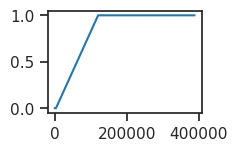
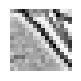
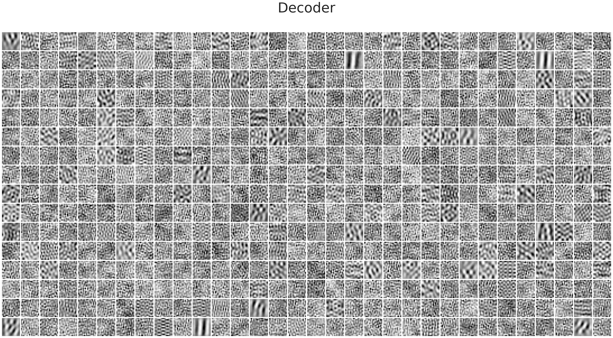
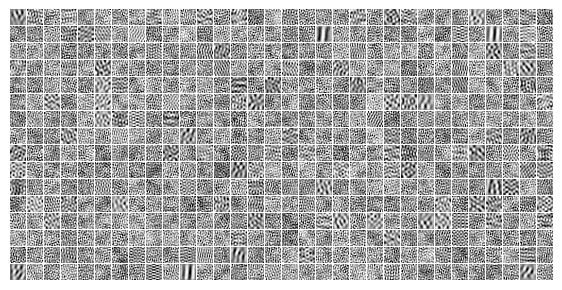
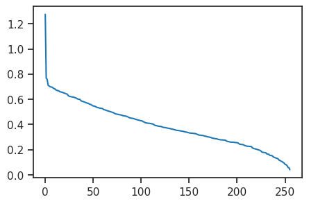
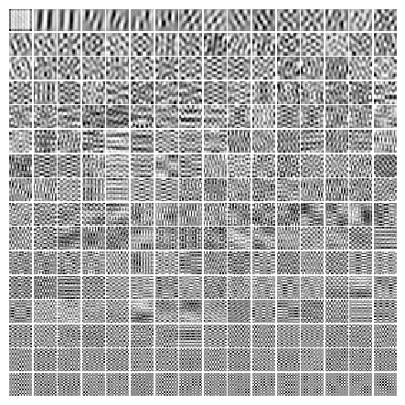

(24) DOVES — LinearGaussian — 1#
Motivation: Overcomplete, applied to DOVES. Device = cuda:1
Show code cell source
# HIDE CODE
import os, sys
from IPython.display import display
# tmp & extras dir
git_dir = os.path.join(os.environ['HOME'], 'Dropbox/git')
extras_dir = os.path.join(git_dir, 'jb-vae/_extras')
fig_base_dir = os.path.join(git_dir, 'jb-vae/figs')
tmp_dir = os.path.join(git_dir, 'jb-vae/tmp')
# GitHub
sys.path.insert(0, os.path.join(git_dir, '_PoissonVAE'))
from figures.fighelper import *
# warnings, tqdm, & style
warnings.filterwarnings('ignore', category=DeprecationWarning)
from rich.jupyter import print
%matplotlib inline
set_style()
Import \(/\) prep#
from _tmp.linvae import prepare_stuff
from _tmp.gapvae import iteration, validate
from _tmp.plotters import plot_latent_space, plot_latent_scatter
n_latents = 512
dim = 16
bias = True
batch_size = 1000
epochs = 3600
lvae, optim, optim_schedule, trn, vld, device, kws_iter = prepare_stuff(
device_idx=1,
dim=dim,
bias=bias,
poisson=False,
n_latents=n_latents,
max_grad_norm=5000, # 500,
batch_size=batch_size,
epochs=epochs,
lr=1e-3,
beta=1.0,
)
+-------------------+------------+ | Module Name | Num Params | +-------------------+------------+ | LinearGaussianVAE | 394.5 K | | --- | --- | | enc | 263.2 K | | dec | 131.3 K | +-------------------+------------+
fig, ax = create_figure(1, 1, (2.0, 1.4), layout='constrained')
ax.plot(kws_iter['beta_values'])
plt.show()

fig, ax = create_figure(1, 1, (1.0, 0.8))
ax.imshow(to_np(vld.dataset.x[1400, 0]), cmap='Greys_r')
remove_ticks(ax)
plt.show()

Train / Validate#
trn#
%%time
pbar = tqdm(range(epochs), ncols=130, position=0)
nelbo, grads = np.zeros(epochs), np.zeros(epochs)
for ep in pbar:
grad, tot, recon, kl, _ = iteration(
ep, lvae, trn, optim, optim_schedule, device, **kws_iter)
nelbo[ep], grads[ep] = recon + 1.0 * kl, grad
msg = ', '.join([
f"grad = {grad:0.1f}",
f"loss = (kl: {kl:0.1f}, recon: {recon:0.1f} —— tot: {tot:0.2f}) ",
])
pbar.set_description(msg)
grad = 16.1, loss = (kl: 52.8, recon: 101.8 —— tot: 154.55) : 100%|███████████████████████| 3600/3600 [32:13<00:00, 1.86it/s]
CPU times: user 6h 46min 14s, sys: 7min 20s, total: 6h 53min 34s
Wall time: 32min 13s
loss_vld = validate(lvae, vld, device)
loss_vld
{'kl': 49.89573829568196,
'recon': 106.3860135419874,
'tot': 156.28175170297104}
Plot weights#
w_dec = lvae.dec.weight.T.reshape(
n_latents, 1, dim, dim)
grid_dec = make_grid(w_dec, (16, 32))
w_dec.shape, grid_dec.shape
(torch.Size([512, 1, 16, 16]), (271, 543))
fig, ax = create_figure(1, 1, (50, 20), dpi=200)
ax.imshow(grid_dec, cmap='Greys_r')
ax.set_title('Decoder', fontsize=50, y=1.06)
remove_ticks(ax)
plt.show()

fig, ax = create_figure(1, 1, (7, 5.5), dpi=100)
ax.imshow(grid_dec, cmap='Greys_r')
remove_ticks(ax)
plt.show()

Data PCA#
svd = torch.svd(trn.dataset.x.squeeze().flatten(start_dim=1))
pcs = to_np(svd.V.mH).reshape(-1, dim, dim)
ss = 100 * to_np(svd.S / svd.S.sum())
plt.plot(ss);

grid_pcs = make_grid(pcs, (16, 16))
fig, ax = create_figure(1, 1, (5.5, 5.5), dpi=100)
ax.imshow(grid_pcs, cmap='Greys_r')
remove_ticks(ax)
plt.show()
